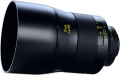

器材库 > 35mm画幅MF定焦镜头 > Otus 85/1.4

详细规格
镜头类型
中远摄/远摄镜头
发布日期
2014-09-09
厂家推荐价格
4,490.00 （美元）
焦距
85mm
等效35mm画幅焦距
85mm
最大光圈
f/1.4
最小光圈
f/16
视角（对角）
28.24°
视角（水平）
23.71°
视角（垂直）
15.97°
镜头结构
11片/9组
非球面镜片
1片
低/超低色散镜片
6片
光圈叶片
9片
最近对焦距离
80cm
滤镜口径
86mm
镜头卡口
Canon EF, Nikon F
防抖
否
颜色
黑色
重量
佳能版1100g、尼康版1200g
十八刀2015-02-06 21:534.75 分
操作性 4.50耐用性 5.00性价比 4.00解像力 5.00色彩还原 5.00机械结构 5.00
cybertron2014-09-17 18:364.83 分
操作性 5.00耐用性 5.00性价比 4.00解像力 5.00色彩还原 5.00机械结构 5.00